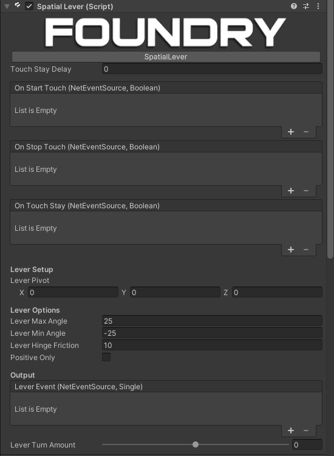

SpatialLever

Description
A networked lever implementation, using the foundry touch point system.
Usage
Add to an object with a collider representing the grabbable portion of the lever, then set the lever pivot to the point on the lever that it should rotate around.
The lever will always rotate around the local z axis, so make sure the lever is oriented correctly.
When the lever is grabbed, it will rotate by Lever Grab Friction degrees per frame, and when it is not grabbed, it will rotate by Lever Release Friction degrees per frame.
You can set the lever's Lever Min Angle and Lever Max Angle to the minimum and maximum angles the lever should be able to rotate to.
Networking
To network the object as well add a NetworkObject and NetworkTransform.